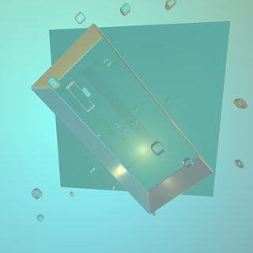

Art Blocks: the code and the token's seed are on-chain; the record, preview and live view come from Art Blocks' servers — these are our copies.
1 work · 3 files: for each work our copies of its record, its image (the preview) and its live view (the page that draws the art in a browser), each pinned at Pinata and Filebase and archived in S3. The code libraries the live views load are kept the same way. A marketplace reading the token's address goes to Art Blocks' servers, not to these copies; the copies keep the record, preview and live view if those servers stop, and their fingerprints are in the public list (see how these works are kept and proven). Artists are credited as the works' own records name them.

0xa7d8d9ef8d8ce8992df33d8b8cf4aebabd5bd270bafkreiekeecjbwcy3wxo5gu2lisgfo4mwnnii6tvgne2jksq4p7mfwygue gateway.pinata.cloud · ipfs.filebase.io · c-ipfs-gw.nmkr.io — 2026-11-26 · pinned at Pinata and Filebase, archived in S38a210490d858ddaeee9a9a5a2462bb8cb35a847a753349a4aa50e3fec2db06a1 · 3,589 byteshttps://api.artblocks.io/token/305000142bafybeielfzjsqlli3im7qy6tnqcuhuyu4bvqrufu7jyt43ubxl66nwfn4u gateway.pinata.cloud · ipfs.filebase.io · c-ipfs-gw.nmkr.io — 2026-11-26 · pinned at Pinata and Filebase, archived in S3e3d937eb314bbee2582c8b626d1f41c173eb99784ad660a34ece5086d732d6f2 · 848,187 byteshttps://media-proxy.artblocks.io/1/0xa7d8d9ef8d8ce8992df33d8b8cf4aebab…bafkreiepe4ssdui2p6sdg66tg72dqirbgxshxem4yzxje6i6sgx5pqqwbm gateway.pinata.cloud · ipfs.filebase.io · c-ipfs-gw.nmkr.io — 2026-11-26 · pinned at Pinata and Filebase, archived in S38f272521d11a7fa4337bd337f438222135e47b919cc66e92791e91afd7c2160b · 9,536 byteshttps://generator.artblocks.io/1/0xa7d8d9ef8d8ce8992df33d8b8cf4aebabd5…Generated archive pages. Content identifiers point to the public IPFS network.